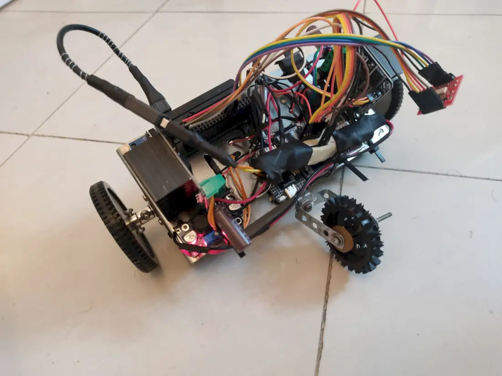
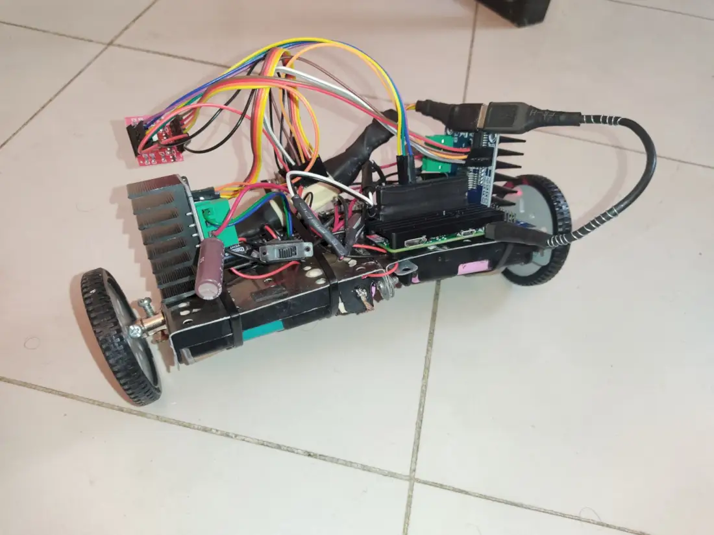
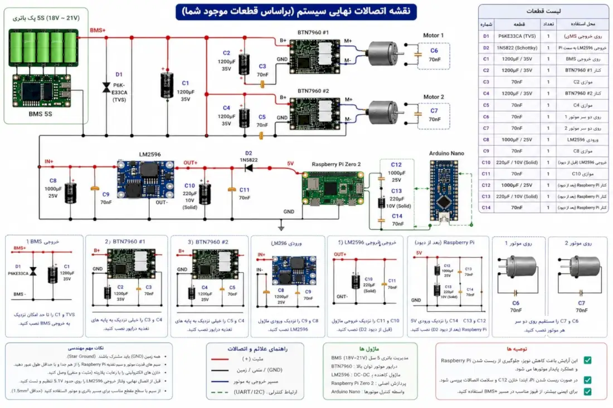
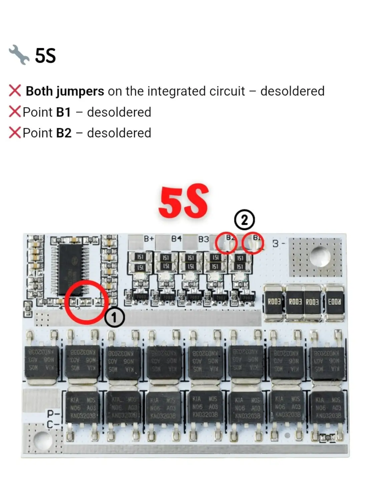
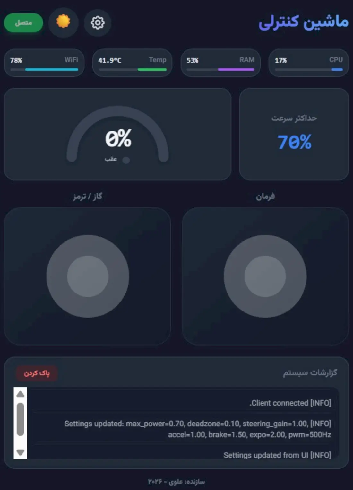

📸 نگاهی به سختافزار فیزیکی
نمای کلی از شاسی، کابلکشی، قرارگیری درایورها و هسته پردازشی رسپبریپای.


برای بزرگنمایی روی تصاویر کلیک کنید.
⚙️ معماری الکترونیک و اتصالات
طراحی مدارات ایزولاسیون، توزیع قدرت و راهاندازی موتورها.
قطعات اصلی
- 🧠 پردازنده: Raspberry Pi Zero 2 W (Debian Bookworm)
- ⚡ درایورها: ماژول BTN7960 (تحمل تا ۴۳ آمپر)
- ⚙️ پیشرانه: موتورهای صنعتی Buhler آلمان (۲۰ ولت)
- 🔋 تغذیه: پک لیتیومی 5S (۱۹~۲۱ ولت) + LM2596 کاهنده
نکات مهندسی
استفاده از اپتوکوپلر TLP281 در مسیر سیگنالهای PWM برای جداسازی کامل مدار فرمان (۳.۳ ولت) از مدار قدرت درایورها (۲۰ ولت).


💻 نرمافزار و رابط کاربری
طراحی یک داشبورد مدرن تحت وب با نرخ بروزرسانی بالا برای کنترل ربات و مانیتورینگ وضعیت سختافزار.
FastAPI & WebSockets
بکاند قدرتمند پایتون. اجرای فرامین کنترلی با نرخ بروزرسانی ~۳۰ هرتز به صورت دوطرفه و بلادرنگ.
تلهمتری زنده
مانیتورینگ دائمی درصد استفاده از CPU، RAM، دمای هسته و کیفیت سیگنال WiFi بدون نیاز به رفرش صفحه.
شتابگیری نرم (Ramping)
پیادهسازی اینرسی نرمافزاری روی محور گاز جهت جلوگیری از آسیب به باتریها بر اثر جریان کشی لحظهای.

📡 داشبورد کنترلی ۱۰۰٪ آفلاین
داشبورد کنترل ربات (که روی خود رسپبریپای اجرا و از طریق شبکه محلی باز میشود) کاملاً مستقل از اینترنت است؛ برخلاف همین صفحه معرفی که برای GitHub Pages ساخته شده.
بدون CDN و فونت اینترنتی
تمام CSS، جاوااسکریپت و فونتها به صورت لوکال از پوشه static/ سرو میشوند؛ حتی جویاستیک هم پیادهسازی خالص جاوااسکریپت است.
فقط شبکه محلی (LAN)
با اتصال موبایل یا لپتاپ به همان Wi-Fi رسپبریپای و باز کردن آیپی آن، داشبورد بدون هیچ وابستگی بیرونی کار میکند.
سبک و سریع روی Pi Zero
بدون فریمورک سنگین؛ CSS و جاوااسکریپت دستی و بهینه برای سختافزار محدود رسپبریپای زیرو نوشته شدهاند.
🛡️ ایمنی به عنوان اولویت اول
کنترل موتورهای پرقدرت از راه دور نیازمند چند لایه محافظتی مستقل است تا هرگونه قطعی ارتباط یا خطای نرمافزاری به توقف امن ربات ختم شود.
Watchdog ضربان قلب
در صورت قطع ارسال Heartbeat از مرورگر، سرور در کمتر از ۶۰۰ میلیثانیه موتورها را متوقف میکند.
توقف اضطراری
دکمه STOP همیشه در دسترس، هر خطای اتصال و رها شدن تب مرورگر بلافاصله فرمان توقف صادر میکند.
محدودسازی شتاب (Slew-rate)
تغییرات فرمان موتور به صورت نرم اعمال میشود تا از شوک جریان به باتری و گیربکس جلوگیری شود.
ایزولاسیون الکتریکی
اپتوکوپلر TLP281 مدار فرمان رسپبریپای را به طور کامل از مدار قدرت درایورها جدا میکند.
📈 تحلیل الگوریتم حرکتی (Throttle Expo)
برای افزایش دقت هدایت ربات در سرعتهای پایین و فضاهای تنگ، از یک **تابع نمایی (Exponential)** به جای واکنش خطی استفاده شده است. با تغییر اسلایدر زیر، تاثیر این فرمول ریاضی بر خروجی فیزیکی موتورها را بررسی کنید.
🛠️ چالشهای مهندسی سختافزار/نرمافزار
توسعه این سیستم روی بستر رسپبریپای چالشهای خاصی داشت. برای مشاهده شرح مسئله و راهکارها کلیک کنید.
⚠️ مشکل
در سیستمعامل دبیان Bookworm روی رسپبریپای، تولید PWM به صورت نرمافزاری توسط کتابخانه lgpio انجام میشود. این کتابخانه فرکانسهای مجاز را به پلههای خاصی (مثل ۵۰، ۱۰۰، ۵۰۰، ۱۰۰۰ هرتز) محدود میکند و درخواست فرکانسهای خارج از این لیست باعث کرش کردن سرور میشود.
✅ راهحل
طراحی یک فیلتر الگوریتمی در بکاند پایتون. هرگاه کاربر فرکانس جدیدی را از رابط کاربری درخواست کند، کد پایتون به صورت خودکار آن را به نزدیکترین فرکانس مجاز سیستمی گرد میکند. همچنین حداکثر فرکانس برای حفظ پایداری سیستم روی ۴۰۰۰ هرتز محدود شد.
⚠️ مشکل
تلاش اولیه برای تنظیم فرکانس PWM روی ۲۰ کیلوهرتز (جهت حذف صدای سوت موتور) با شکست مواجه شد. اپتوکوپلر TLP281 زمان خاموش شدن (Fall time) کندی دارد. در فرکانسهای بالا، عرض پالسهای بسیار کوتاه (مثل توان ۱٪) توسط اپتوکوپلر کشیده شده و در عمل به عنوان توان ۳۰٪ به درایور میرسید که کنترل سرعت پایین را ناممکن میکرد.
✅ راهحل
تنظیم فرکانس پیشفرض سیستم روی ۵۰۰ هرتز. این فرکانس تعادل بینظیری ایجاد میکند؛ هم به اندازه کافی بالاست تا نویز صوتی (سوت) موتور را به لرزشی قابل تحمل تبدیل کند، و هم به اندازه کافی پایین است تا اپتوکوپلر فعلی بتواند پالسهای دقیق و میلیمتری را بدون تغییر شکل به درایور BTN7960 منتقل کند.
💻 راهنمای راهاندازی (Deployment)
دستورات لازم برای نصب پیشنیازها و اجرای سرور روی رسپبریپای به عنوان یک سرویس پسزمینه.
fastapi>=0.100.0 uvicorn>=0.22.0 websockets>=11.0.3 psutil>=5.9.5 gpiozero>=2.0.1 lgpio>=0.2.2.0
# 1. Update OS and install python venv sudo apt update sudo apt install python3-pip python3-venv # 2. Create virtual environment and activate python3 -m venv venv source venv/bin/activate # 3. Install requirements pip install -r requirements.txt # 4. Manual Run Test uvicorn server:app --host 0.0.0.0 --port 8000
# 1. Create a systemd service file sudo nano /etc/systemd/system/buhler-drive.service # Paste the following config: [Unit] Description=Buhler Motor Drive Web Server After=network.target [Service] User=pi WorkingDirectory=/home/pi/web_drive ExecStart=/home/pi/web_drive/venv/bin/uvicorn server:app --host 0.0.0.0 --port 8000 Restart=always RestartSec=3 [Install] WantedBy=multi-user.target # 2. Enable and start the service sudo systemctl daemon-reload sudo systemctl enable buhler-drive.service sudo systemctl start buhler-drive.service